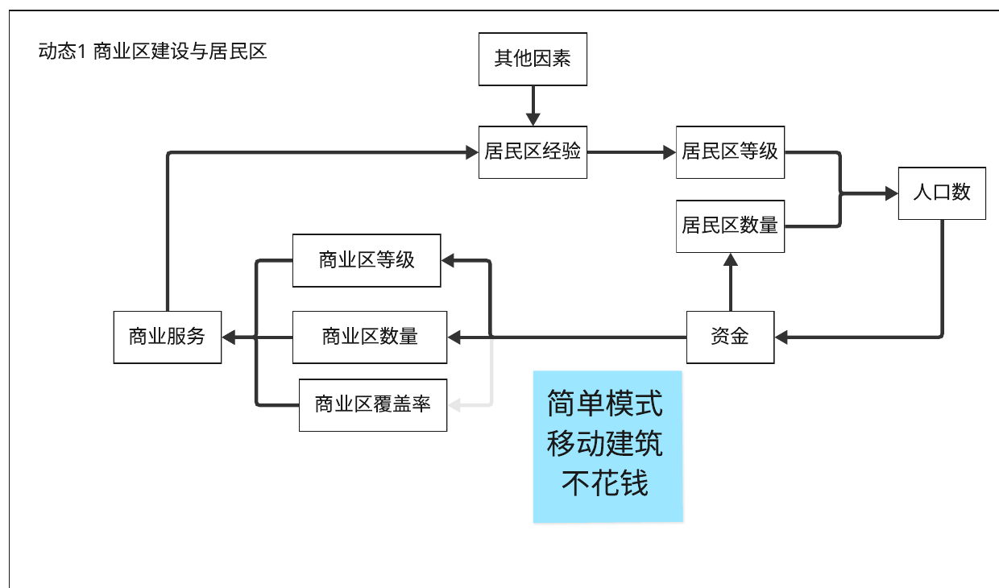
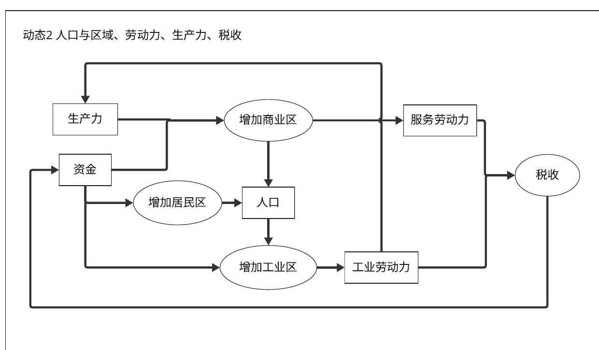
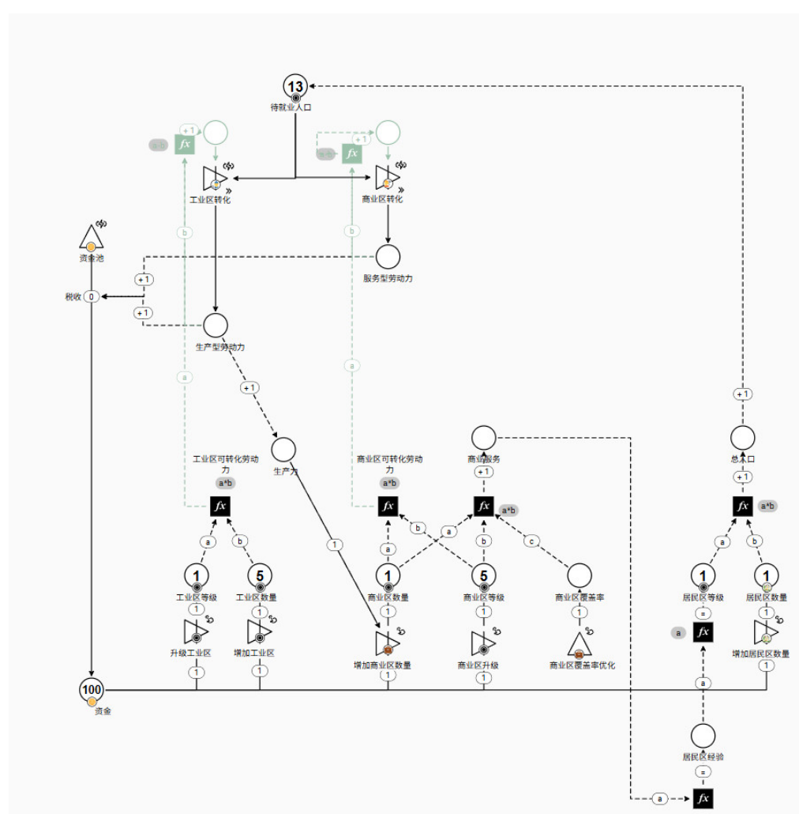
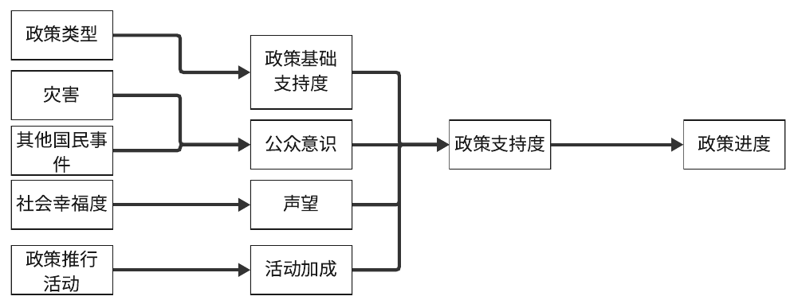
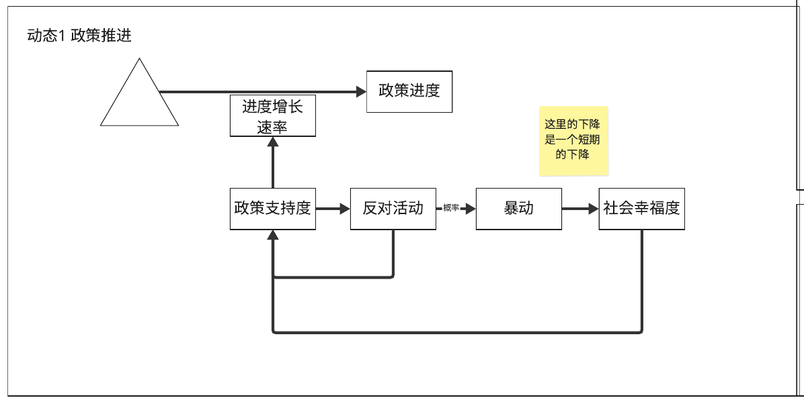
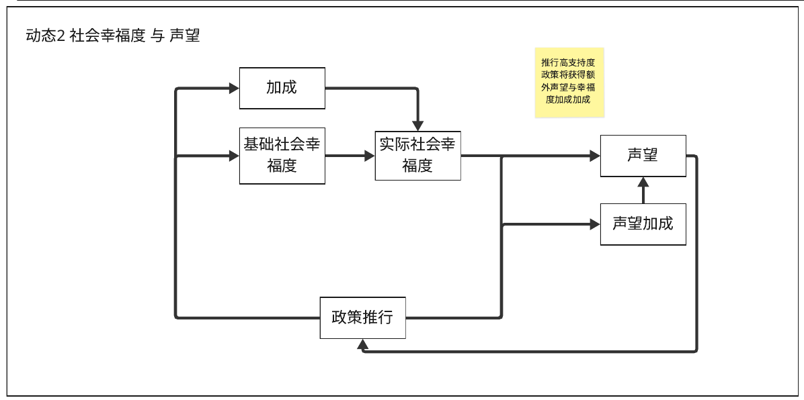
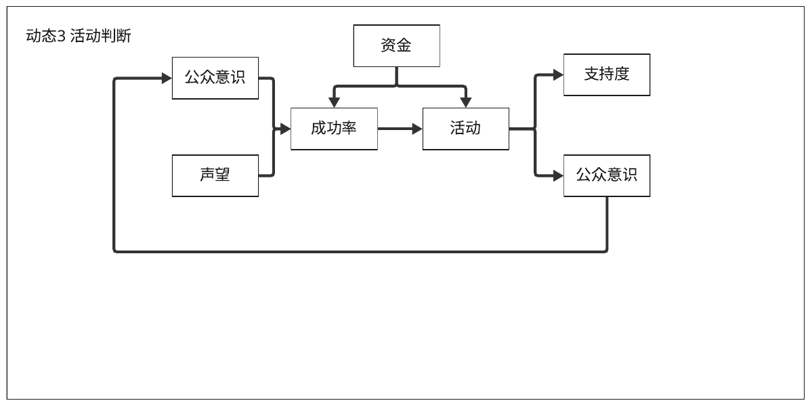
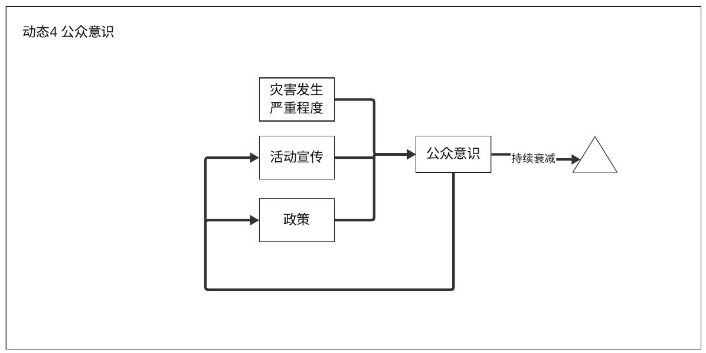

Sea U started out as a city-building game about sea-level rise. This page collects the systems design for that concept: starting from the design goals and the players' barriers, we built an economic loop and a political loop and modeled them in Machinations. The project later changed direction to the water taxi; the reasons are at the end of the page.
Design Goals
- Theme: climate change: sea-level rise.
- High-Level Purpose: "Mobilize Urban Action on Rising Seas": players think about how cities can respond to sea-level rise, and pay attention to and take part in society's response.
- Elements during ideation: resource management, city building, population, disasters, simulation. Reference games: Spellcaster University, Frostpunk, Settlement Survival, Anno 1800, Cities: Skylines.
The transformations we hoped players would go through:
- Believe that climate change is a real and urgent threat to cities.
- Know the flood-protection and adaptation measures different cities take (such as seawalls and floating communities), recognize which cities and groups are most vulnerable, and understand the differences in risk.
- Learn basic city planning methods, such as how to allocate flood protection, relocate populations or design floating buildings.
- Feel empathy for citizens affected by disasters.
- Start to see themselves as "people who care about environmental issues" and "people who can propose solutions", rather than bystanders.
- Be willing to take part in environmental or urban governance activities in real life.
Barriers and Design Strategies
Following the transformation framework, we first listed why players haven't transformed yet, then chose a strategy for each barrier: Eliminate, Constrain, Scaffold Around or Set Aside.
| Barrier | Strategy | Idea |
|---|---|---|
| Thinks sea-level rise is something far away | Eliminate | Not sure how yet, but it should be solvable |
| Thinks it is a matter for experts | Eliminate | |
| Doesn't live in a coastal area and thinks sea-level rise has nothing to do with them | Constrain | We don't plan to mainly target this group |
| Thinks talking about the environment is boring, "politically correct" and uncool; cares more about short-term economic growth than long-term planning | Scaffold Around | Avoid mentioning the environment directly: it's a cool building game set against disasters |
| Has no chance to get involved in real community action or environmental projects; some countries don't publish policies clearly, so accessing relevant policies is complicated | (Undecided) | |
| Some players may lack systems-thinking skills | Set Aside | Try giving these players other fun things to do? |
| The effects of sea-level rise involve many parts of society and play out over a very long time | Eliminate | |
| Doesn't understand how city facilities and policies work | Eliminate | |
| Thinks a higher seawall will solve the problem; thinks it's nothing to worry about, or that nothing can be done | Eliminate | |
| The theme is too heavy, and they don't want to face it emotionally | Scaffold Around | Add some cheerful content; don't be as gloomy as Frostpunk |
System Structure
Following the MDA framework, we first listed the systems at the mechanics level, then considered the dynamics they would produce:
| Level | Content |
|---|---|
| Systems | City building, migration, economy, disasters, public opinion, repair, policy |
| City modules | Residential, production, ecology, energy, infrastructure |
| Dimensions affected by policy | Economy, environment, society, citizen awareness; split into short-term and long-term effects |
| Core dynamics | Disasters and recovery (uncertain sea-level rise, secondary disasters); resource and economic balance; policy implementation and feedback |
Resources: money, total population, service population, production population, commercial coverage, commercial zones, residential zones, industrial zones, and influence (residential experience).
Economy: Population, Zones and Taxes
Dynamic 1: Commercial Construction and Residential Zones


- Money is spent on building residential and commercial zones. The level and number of residential zones determine the population, and the population brings in money.
- The level, number and coverage of commercial zones determine commercial services; commercial services and other factors build up residential experience, which raises residential level.
- In easy mode, moving buildings is free.
Dynamic 2: Population and Zones, Labor, Productivity, Taxes


- The working population is split into a production population (industrial zones; primary and secondary industry) and a service population (tertiary industry). Commercial zones need some of the population to become service population and consume the productivity provided by the production population; industrial zones turn population into production population, which provides productivity.
- Taxes come from the service population and the production population, and turn into money for adding residential, commercial and industrial zones.
- Commercial zones actively convert population: when there isn't enough population to convert into commercial population, they convert all the remaining population and show a shortage. Conversion flows to industrial zones first.
Dynamic 3: Building New Districts
Productivity and money are both used to build new districts (marked "later" at the time).
Machinations Model
I built Dynamic 2 as a Machinations model, covering the conversion of industrial and commercial zones, labor, productivity, taxes and money.


What was still to be designed at the time (it needed a data configuration table):
- The formula for how industrial and commercial zones convert labor (variables: zone level, number of zones)
- How commercial services are calculated
- Residential population = f(residential level)
- Taxes = f(service population, production population, tax rate)
- The residential experience formula (variables still missing)
Mechanics left out for simplicity: population growing at a set rate (for now it changes instantly when the level is reached). Another idea was a "job-seeker subsidy" policy to raise happiness and prestige.
Politics: Policies and Public Opinion
What Makes Up Policy Support


The policy type sets a policy's base support; disasters and other national events affect public awareness; social happiness affects prestige; campaigns for a policy add a campaign bonus. Together these determine policy support, and support drives policy progress.
Dynamic 1: Policy Progress


Policy support determines how fast progress grows. A policy's growth is settled once per time unit (per day or per hour):
Policy growth = base growth per time unit × growth rate bonus
Base growth per time unit = 100% ÷ base time (in time units)- When policy support is below 50%, opposition campaigns appear with a certain probability.
- An opposition campaign costs 1 point of support per time unit.
- An opposition campaign has a fixed chance to cause a riot, which lowers social happiness by a set amount (a short-term drop).
- An opposition campaign lasts a set time, and each city can have at most one at a time. An "intensity" attribute for opposition campaigns could be considered later.
Dynamic 2: Social Happiness and Prestige


- Base social happiness plus bonuses gives actual social happiness; actual social happiness affects prestige and the prestige bonus, and prestige in turn affects policy implementation.
- Implementing a policy with high support gives extra prestige and happiness bonuses.
| Prestige | Level |
|---|---|
| 0–20 | Unknown |
| 21–40 | Noticed |
| 41–60 | Respected |
| 61–80 | Renowned |
| 80–100 | Legend |
Dynamic 3: Campaign Checks


Public awareness and prestige determine a campaign's success rate, and money affects both the success rate and the campaign itself. Campaigns raise support and public awareness, and public awareness in turn affects the success rate of the next campaign.
Dynamic 4: Public Awareness


Public awareness is affected by the severity of disasters, campaign publicity and policies, and decays over time; public awareness in turn affects campaign publicity and policies. Campaigns that raise public awareness include speeches and flood drills.
Disasters, Events and Endings
- Disasters: sea-level rise, tsunamis, seawater intrusion, tides. Each disaster has two states, "about to happen" and "happening", to give the player time to react; flooded tiles can no longer be built on.
- Repair: damaged facilities go through "needs repair → repairing → repaired".
- Policy events: policy in progress, stopped, succeeded or failed (with the reason for failure and its cost).
- Tenders: the player can open a tender and choose the project and cost.
| Bad ending | Trigger |
|---|---|
| Bankruptcy | Money reaches zero |
| Rebellion | Prestige (or social happiness, etc.) too low |
| Submerged | Disasters flood all the land |
| Disease | Ecology / sanitation too low |
UI Sketches
- Main screen: date, sea level, population, productivity, time controls (pause / play / fast-forward), plus entry points for notifications, events, the tech tree and the encyclopedia.
- Other screens: start screen, saves (3 slots), difficulty (easy / normal / hard), prestige, news, and the encyclopedia contents (game goals, building, policy, economy, population and labor, districts, background).
Project Breakdown
To move development forward, we broke the whole concept down into a task tree by discipline: 2D art, UI, data and systems, programming, audio, production and narrative. The data and systems branch listed every question that needed a number, such as "a suitable population per house", "the ratio of game time to real time", "how fast each method raises or lowers prestige" and "the minimum money that triggers the bankruptcy ending"; the programming branch had acceptance criteria for each feature, such as "population grows according to the data", "support matches policy progress" and "the ending triggers when money falls below the threshold".
Why It Was Cut
The concept had many systems and a lot of content, while the "transformation" theory stayed on the surface instead of becoming the core structure that connects everything. After the review at the start of the semester, we kept the inspiration of a city at sea, narrowed the scope to work and transportation, and switched to a water taxi driver (see From City-Building to Water Taxi).
Compiled from the team's Miro design board.